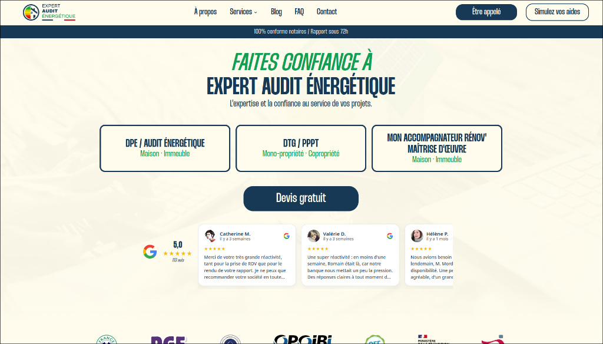
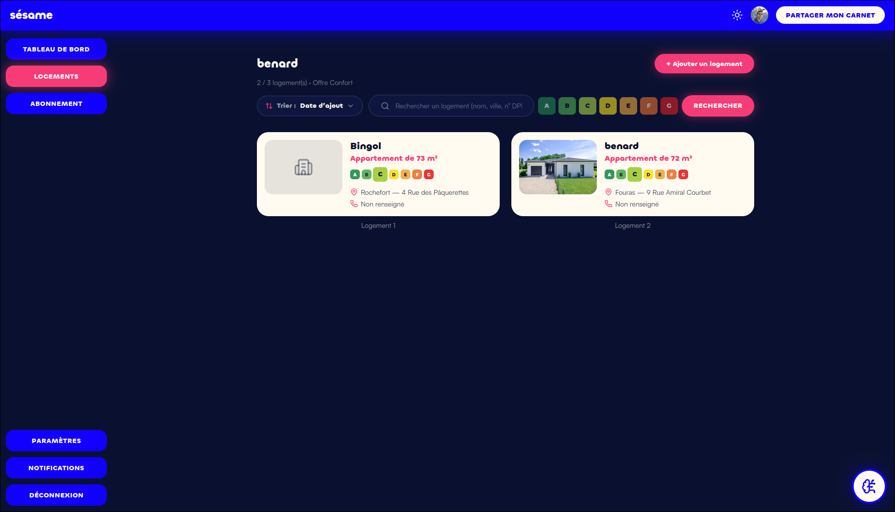

Étudiant en informatique, curieux et motivé, je développe mes compétences dans les systèmes, les réseaux et les solutions numériques.
Actuellement en deuxième année de BTS SIO (Services Informatiques aux Organisations), je consolide mes connaissances techniques à travers des projets et des expériences professionnelles.
Continuer à progresser dans l'informatique, mettre mes compétences au service d'une équipe et acquérir de nouvelles expériences dans le monde professionnel.
HTML, CSS, JavaScript, PHP, Java, C++, Python
Installation, configuration et administration de postes et environnements.
Notions de réseau, adressage IP, services et dépannage.
Conception et interrogation de bases de données relationnelles.
Utilisation d'outils de développement et de gestion de versions.
Autonomie, curiosité, esprit d'équipe et capacité à résoudre des problèmes.
Stage effectué du 8 juin 2026 au 3 juillet 2026 au sein de l'entreprise Expert Audit Énergétique. Les missions réalisées ont principalement porté sur le développement (conception complète du site internet de l'entreprise et participation au développement d'un logiciel SaaS) ainsi que sur la maintenance et l'intégration de systèmes d'automatisation.
Découverte de l'entreprise, prise en main de l'environnement de travail et analyse des besoins pour le site web.
Développement front-end du site internet, intégration de la charte graphique et configuration des outils SaaS.


Maintenance des systèmes, mise en place des processus d'automatisation et tests de fonctionnement.
Mise en production finale, optimisation du référencement (SEO) et rédaction de la documentation technique.
| Réalisations professionnelles | Gérer le patrimoine informatique | Répondre aux incidents et demandes | Développer la présence en ligne | Travailler en mode projet | Mettre à disposition un service | Organiser son développement |
|---|---|---|---|---|---|---|
| Mise à niveau et configuration des ordinateurs de l’entreprise | ||||||
| Analyse des besoins et objectifs pour le site web | ||||||
| Développement front-end du site et charte graphique | ||||||
| Maintenance, automatisation et tests de fonctionnement | ||||||
| Optimisation du référencement (SEO) et campagne Ads | ||||||
| Mise en production finale et documentation technique |
Conception et réalisation complète du site internet (expertauditenergetique.fr) de la structuration à la mise en ligne, incluant l'intégration d'un système d'automatisation pour le blog.
Développement SaaS : Participation active au développement du logiciel SaaS de l'entreprise, nécessitant rigueur technique, adaptation et compréhension des besoins opérationnels.
Je suis disponible pour échanger sur mon parcours, mes compétences et mes projets.